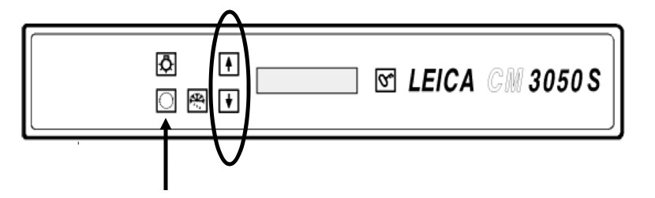
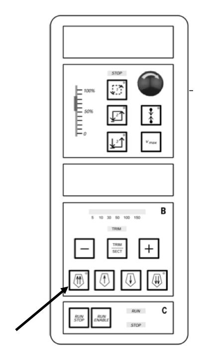
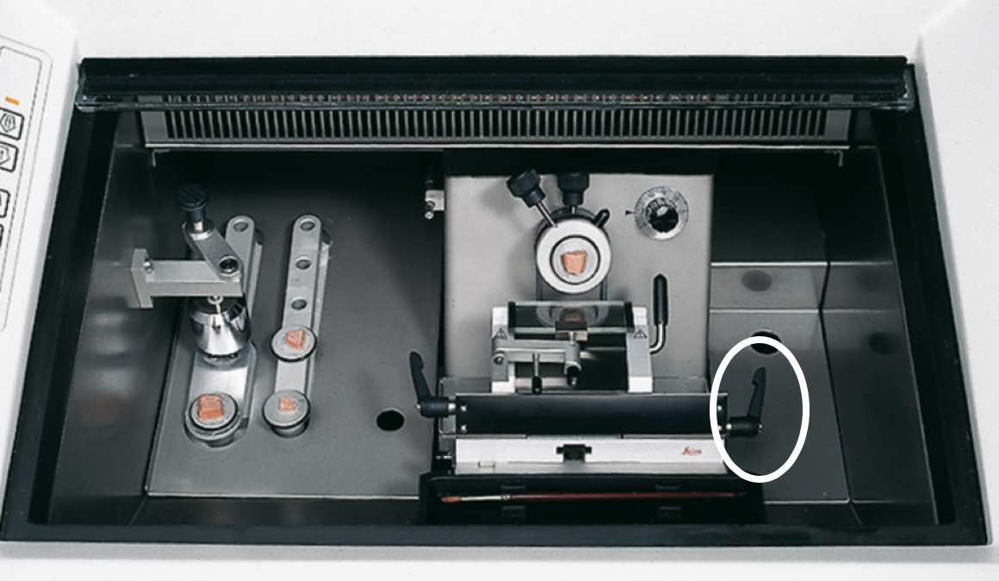
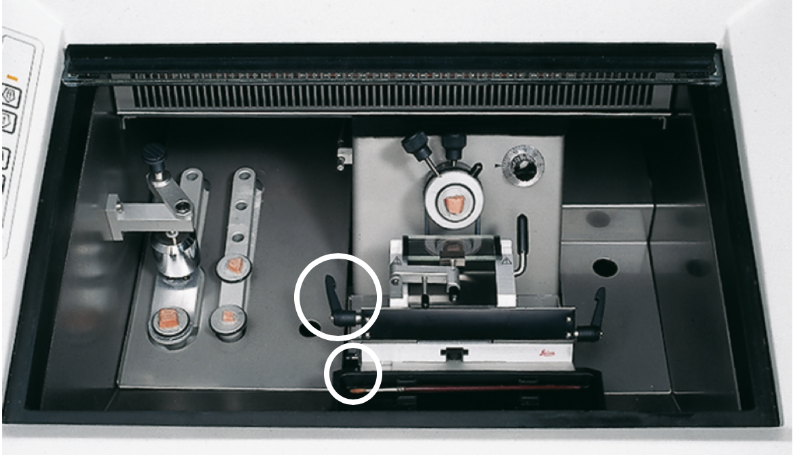
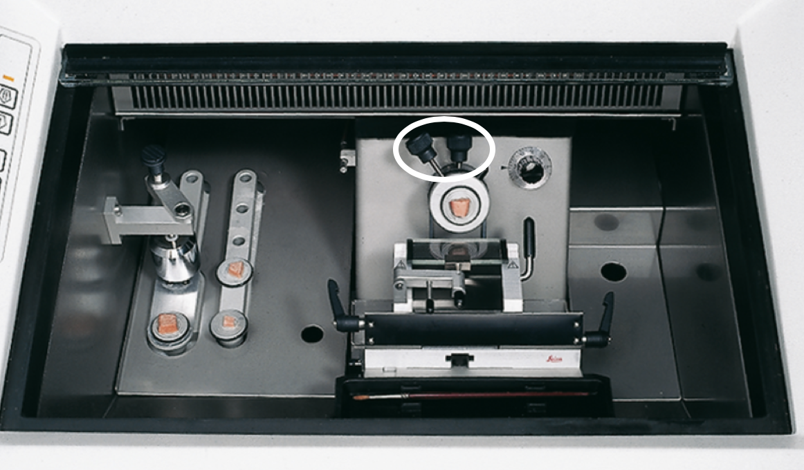
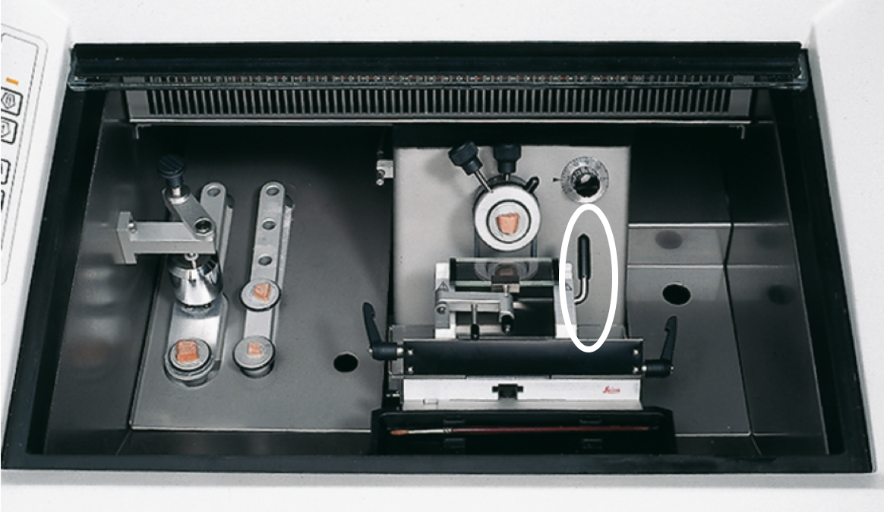
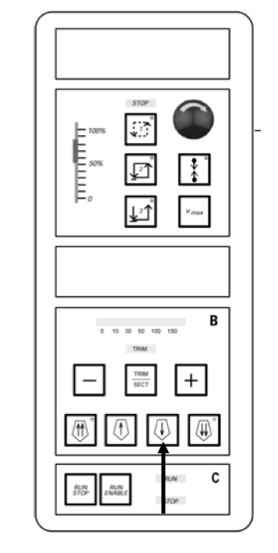
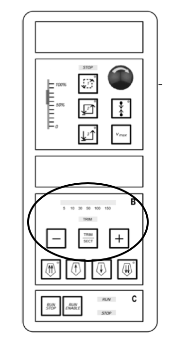

Cryosectioning Protocol
Materials
- Kimwipes
- OCT
- 70% Ethanol
- Anti-roll Glass
- Forceps
- Razor Blades
- Gloves
- Eliminase
- Embedded Parasite Samples
General Cryostat Operation
-
Press the circle button on the top panel of the machine to set temperature. Set the temperature to -26ºC with the up and down arrows.

-
Unlock the machine by tapping the metal lever on the handwheel toward the machine.
-
Move the embedded sample block all the way back by pressing the double arrow button. Once the holder is moved all the way back, the light in the top right corner of the button will blink yellow.

-
Open the main window of the cryostat. Remove the instrument tray from inside the cryostat. Clean the inside with 70% EtOH (avoid using Eliminase as it will freeze in the machine). Check the main stage to see if there is an old blade from previous use. Remove the blade if needed.
-
Optional: Clean the anti-rolling glass with Eliminase (This glass is very expensive, so use care when handling). Turn the tiny screw, on the back of the glass holder in the cryostat, to the left. The glass should slide into the groves of the holder. Tighten the screw by turning it to the right.
-
Adjust the angle of the main stage to zero, by using the lever on the right side of the stage.

-
Move the stage forward or back, so that you have enough space between the blade and the future embedded sample. Use the lever on the bottom left to move the stage. With the lever on the top left try to center the stage with the embedded sample holder.

-
Align the embedded sample block holder by using the two knobs on the top of the block holder, so that the holder is centered with the stage.

-
Wipe down a new blade with 70% ethanol and Eliminase.
-
Flip the lever to the right of the stage up, in order to slide the blade into the blade holder. Once the blade is in place, flip the lever back down to lock it in place.

-
Wipe down forceps with 70% ethanol and Eliminase. Rest the forceps on a cold surface within the cryostat.
-
Close the glass window of the cryostat and allow time for everything to cool down to -26ºC. The temperature will be indicated on the cryostat information screen.
-
Unwrap embedded samples. Get the specimen disk and add a layer of OCT to the top of the specimen disk. Quickly mount the embedded OCT sample onto the center of the specimen disk. This will anchor the embedded sample to the specimen disk. Let freeze.
-
Add more OCT around the bottom base of the embedded sample to more firmly anchor the sample to the specimen disk. Let freeze. Using a razor blade, remove any OCT that may have leaked over the side of the specimen disk that will impede proper positioning in the sample holder.
-
Loosen the embedded sample holder by turning the large black knob to the left. Slide the specimen disk into the block holder. Once straight, lock the disk in the holder by turning the big black knob to the right.
-
Move the block forward by pressing the single arrow button until the block just hits the front of the cutting blade.

-
Slowly shave 20 µm sections until the block is cutting uniformly.
-
Turn on trim by pressing the trim select button. Use the plus and minus buttons to change the thickness of the trim sections to 100-150 µm. This will allow you to quickly trim the block in order to get to the desired area of cutting. Important: Click the trim select again to turn off the trim function 2-3 cuts before you want to end your trimming, as the trimming function doesn’t immediately stop cutting at the trimming thickness when turned off.

-
Using a new razor blade, trim the OCT above and below the area containing the worm(s) as needed. This will create a smaller cutting block to eliminate excess OCT when collecting the sections.
Downstream Endpoints
-
LCM: Follow instructions for LCM using PEN Membrane Slides
-
Spatial RNA-Seq: Follow instructions in [RNA Tomography Protocol] (in progress)
-
RNA localization via FISH: Follow instructions in [RNA FISH Protocol] (in progress)